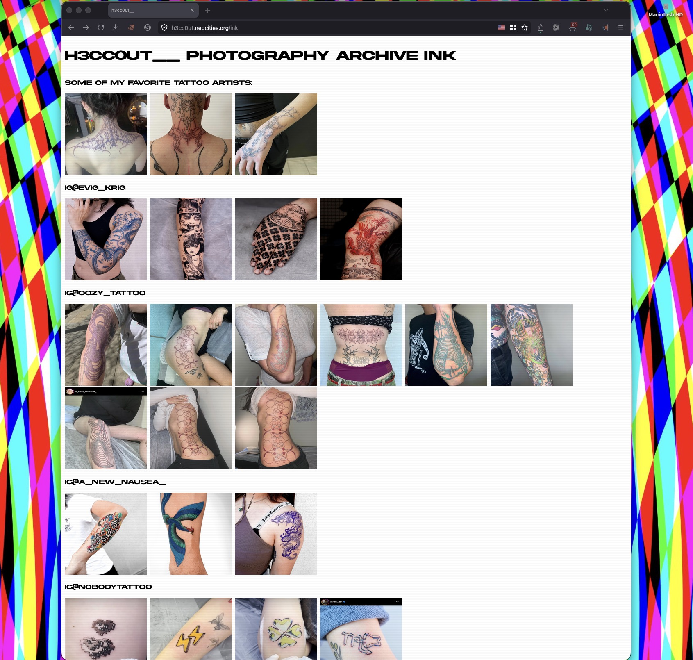
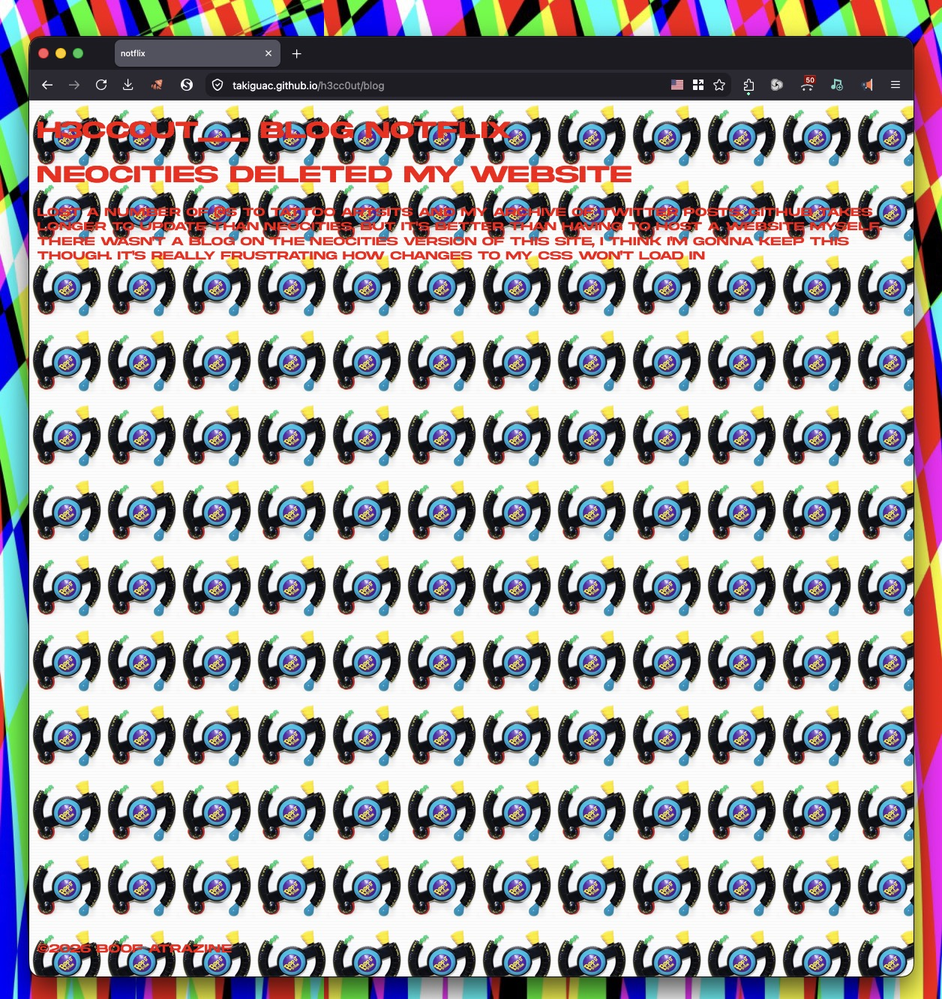
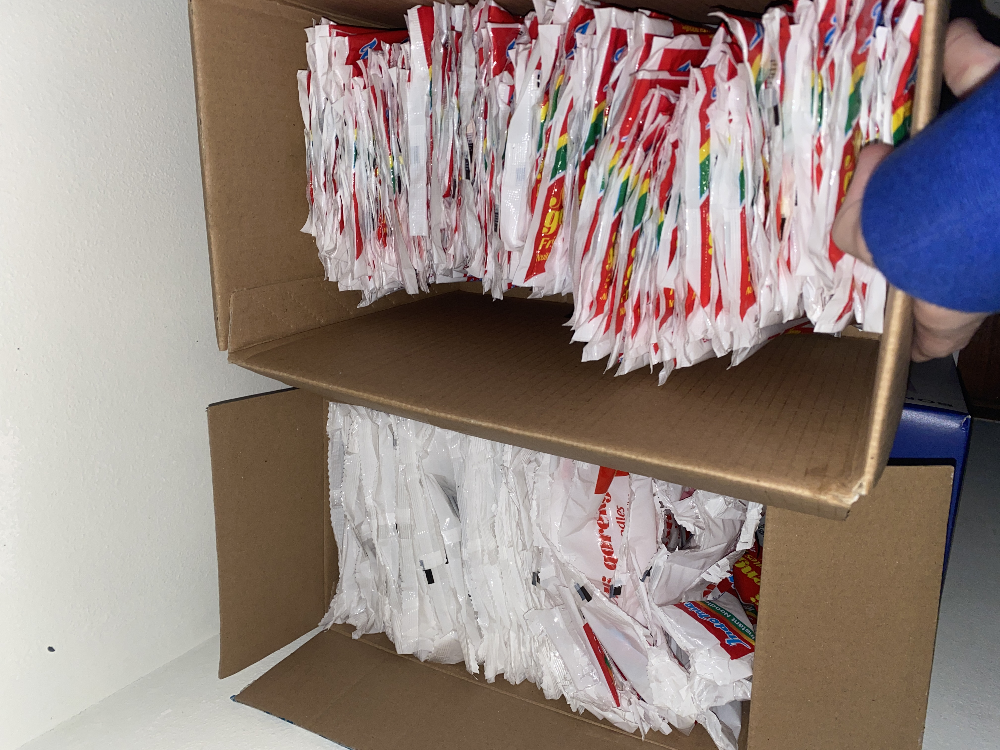

h3cc0ut__ blog portfolio
8/2/2026
started watching chainsmoker cat

latest 2 episodes are in japanese.
7/29/26
started watching mushoku tensei
it's pretty good so far, we'll see
7/26/26 neocities deleted my website
lost a number of @s of tattoo artsits and my archive of twitter posts.

github takes longer to update than neocities, but it's better than having to host a website myself. there wasn't a blog on the neocities version of this site, i think i'm gonna keep this though. it's really frustrating how changes to my css won't load in. we're trying red text

yeah, so that's a no. we'll wait until the text switches to grey and then see if we even want a background image. i downloaded youdj and the ui and functionality are great, but the library sucks. honestly the best thing is probably a cdj or two. really upsetting how google drive only lets you playback mp4s @ 1080p, but what can you do? maybe years down the line that will change.

guess what i'm thinking about